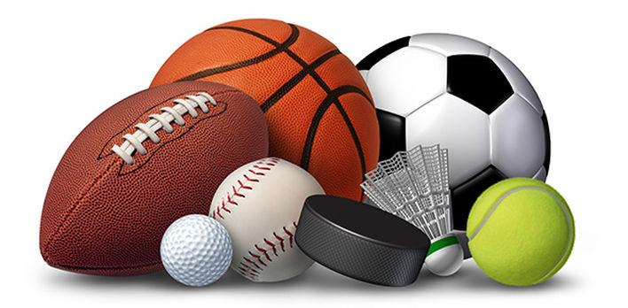

Ma numesc Popescu Vlad Cristian si sunt în clasa a IX-a. Am intrat la acest colegiu din clasa a cincea. Eu sunt unul din putinii copii care inca mai vin cu echipament de sport de acasa, se schimba inaintea fiecarei ore de educatie fizica si practica un sport oarecare, fie ca sunt sau nu indrumati de profesorul lor. In timpul meu liber eu fac baschet la un club privat, dar imi place si fotbalul pe care il joc foarte des la ora mea de sport.
In alte tari, ora de sport este facuta de toti copii din scoala, iar cei ce nu au echipament suporta consecinte. In opinia mea, nimanui nu ii este greu sa isi cumpere o pereche de tenisi, un pantalon de trening si un tricou pe care sa le ia la scoala de maxim 3 ori pe saptamana. Eu am putut si sunt si altii care pot.
Mai este insa o problema. Ora trebuie supravegheata in totalitate de profesorul clasei. Sunt multe cazuri la noi in tara in care elevii se joaca singuri. Se poate intampla ca unii elevi sa se loveasca sau chiar sa se nasca conflicte intre acestia pe care profesorul ar trebui sa le incheie. Lipsa cadrului didactic ii face pe elevi sa creada ca pot face ce vor in timpul orei, inclusiv sa chiuleasca sau sa nu faca ora.
Pe langa ore, scolile ar putea sa incurajeze sportul, nu sa le spuna elevilor ca daca vor sa faca sport sa se duca la licee sportive. In trecut, multe scoli din Romania faceau cluburi scolare care incurajau elevii sa practice un sport, care este un mod foarte sanatos de a trai. Din pacate lucrurile sau schimbat in ultima vreme.
In concluzie, sportul ar trebui practicat de cat mai multa lume si mai ales sa fie incurajat in scoli pentru ca generatiile viitoare sa se poata dezvolta si sa fie mai sanatoase decat noi.